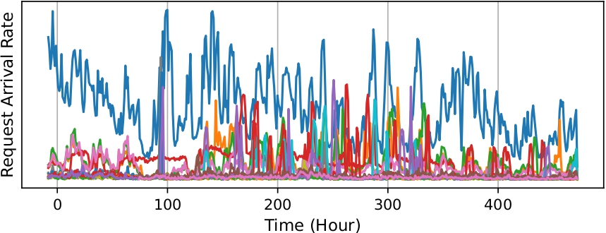
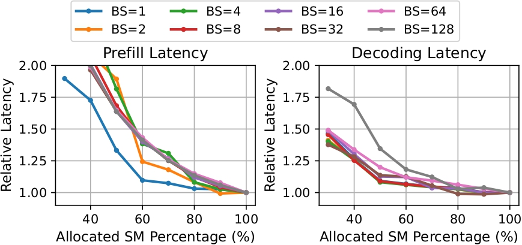
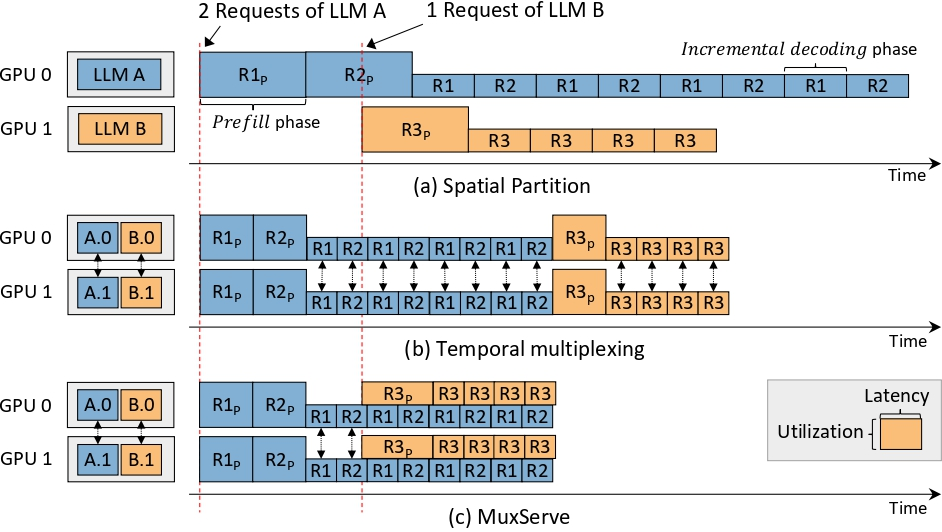
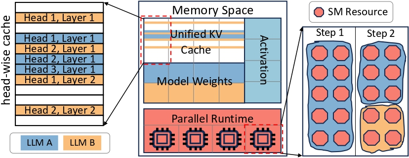
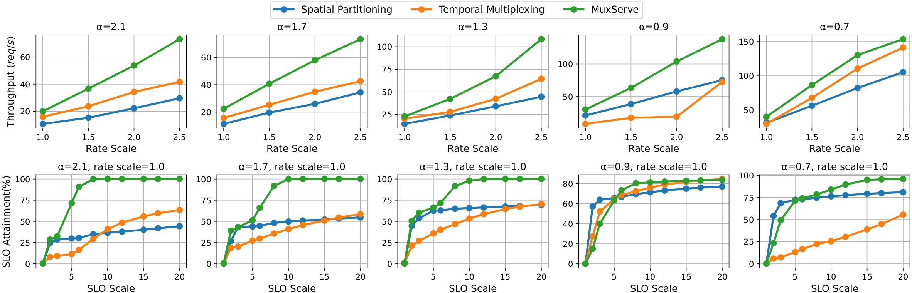

Background: LLM Serving Characteristics
Large language models (LLMs) are transforming the AI industry. As organizations today are rapidly training and deploying various versions and sclaes of LLMs as endpoints for their users, the efficient serving of multiple LLMs has emerged as a crucial and time-sensitive demand within the community. The ultimate goal is to improve the GPU utilization, thus reducing serving cost. Efficient serving of multiple LLMs needs to consider the following characteristics of LLM serving.
Dynamic LLM Popularity
Figure 1 displays the serving traffic of multiple LLMs over 20 days, as observed from an LLM endpoint provider. It is evident that the popularity varies significantly, and each LLM experiences distinct and changing arrival rates, influenced by factors such as output quality, response speed, and usage patterns. Popular LLMs (blue line) consistently receive a considerably higher volume of serving traffic compared to other LLMs, resulting in higher resources demands. In contrast, less popular LLMs may exhibit consistently low arrival rates throughout the observed period, occupying fewer resources. This dynamic and diverse nature of request arrival rates emphasizes the need for a flexible and adaptive approach to efficiently serve multiple LLMs based on their individual popularity and demand, which would translate into significant cost reduction for LLM endpoint providers.

Unbalanced Computation Utilization
LLM inference includes two phases: prefill and incremental decoding. In prefill phase, LLMs process the entire prompt tokens in parallel and generate the first output token. Subsequently, in decoding phase, LLMs iteratively generate one output token at a time, building upon previously generated token. The prefill phase, characterized by long input prompts, heavily utilizes computation resources, while the incremental decoding phase, with limited generated tokens, results in insufficient GPU utilization despite dominating the inference process due to the need to generate lengthy outputs for each prompt.
Figure 2 shows the relative batch inference latency as we change the number of computation resources (SMs) allocated to different phases. We can see that when the amount of computation resources allocated to the dominant decoding phase is reduced, it does not lead to a substantial decrease in latency or throughput. This illustrates the distinct computation resource utilization characteristics of the two phases. Moreover, parallelization across multiple GPUs can further reduce the computation requirements of each phase. Therefore, it is crucial to consider the unbalanced computation utilization of LLMs when designing efficient serving strategies.

Huge Memory Footprint
LLMs occupy huge memory space because of the numerous parameters and large key-value cache (KV cache). The following table shows the memory footprints and configurations of different LLMs. During inference, LLMs need to save KV cache for each token, which dynamically increases as tokens are produced. The KV cache size can be quite large. For example, for a 1k token KV cache, the memory footprint is around 1.3GB for LLaMA-65B. The large memory footprint of LLMs poses a significant challenge for colocating multiple LLMs.
| Model | Parameters (GB) | #Layers | #Heads | Head Size | KV Cache of $1$k Tokens (MB) |
|---|---|---|---|---|---|
| LLaMA-7B | 14 | 32 | 32 | 128 | 262.1 |
| LLaMA-13B | 26 | 40 | 40 | 128 | 409.6 |
| LLaMA-30B | 60 | 60 | 52 | 128 | 798.72 |
| LLaMA-65B | 130 | 80 | 64 | 128 | 1310.7 |
Limitations of Existing Approaches
To reduce the serving cost, many organizations today colocate multiple LLMs with spatial partitioning or temporal multiplexing, as illustrated in Figure 3.

Spatial Partition
Spatial partition allocates separate groups of GPUs for each LLM to accommodate their large model size and the KV cache. However, this spatial partition approach often leads to significant under-utilization of GPUs, since different LLMs typically exhibit varying levels of popularity among users. Spatial partition disregards the varying popularity of different LLMs – LLMs with low arrival rates tend to receive sparse requests, resulting in idle GPUs for extended periods (as illustrated by GPU 1 in Figure 3). Conversely, popular LLMs experience a substantial burden in handling incoming requests (GPU 0 in Figure 3), leading to a potential performance bottleneck.
Temporal Multiplexing
Temporal multiplexing partitions models onto a shared group of GPUs using intra- and inter-operator parallelism, and scheduling requests in an interleaved manner to share the computation and memory resources. Temporal multiplexing can reduce serving latency in the presence of bursty workloads. However, this approach does not fully leverage the potential of GPUs when serving multiple LLMs, as it overlooks the unique characteristics of the prefill and decoding phases of autoregressive LLMs. The decoding phase, which typically plays a significant role in the inference process, often falls short in fully utilizing GPUs. Therefore, temporal multiplexing brings a wave-shaped utilization change, and most of the time it is in the trough.
MuxServe: Flexible Spatial-Temporal Multiplexing
To address the limitations of prior approaches, we introduce MuxServe – a novel serving system that efficiently serves multiple LLMs with flexible spatial-temporal multiplexing. MuxServe leverages the dynamic popularity of LLMs and the unbalanced computation utilization of LLM inference to achieve high GPU utilization and reduce serving cost. MuxServe leverages the characteristics of LLM serving with the following design principles:
-
Popularity-Aware Colocation. MuxServe collocates LLMs based on their popularity. Popular LLMs can be colocated with less popular LLMs to share the computation and memory resources, such that popular LLMs can utilize the idle resources of less popular LLMs. Therefore, MuxServe ensures that popular LLMs are allocated more resources to handle the high volume of requests, while less popular LLMs are allocated fewer resources.
-
Computation-Aware Multiplexing. MuxServe disaggregates prefill and decoding phases and splits them into prefill and decoding jobs. MuxServe adjusts the allocated computation resources of different prefill and decoding jobs of collocated LLMs based on their computation requirements, ensuring that each job is allocated an appropriate amount of resources to maximize GPU utilization. This flexible computation resources allocation enables MuxServe to execute different jobs concurrently and fully utilize the computation resources.
-
Unified Memory MuxServe unifies the memory space of collocated LLMs to improve memory efficiency. MuxServe reserves one single copy of model parameters that can be shared among different prefill and decoding jobs, and allocates a shared KV cache space for collocated LLMs to enable efficient runtime adjustment and reduce fragmentation. This unified memory space allows MuxServe to efficiently manage the memory resources of collocated LLMs.
Guided by these design principles, we formulate the problem of colocation as an optimization problem. Consider we have a cluster $C$ and a set of LLMs $M$ with workload $W$ to be served. We use LLM unit to represent a group of LLMs that will be colocated together with the GPUs they are assigned. Our goal is to find the best group of LLM units $B^*$ that maximize GPU utilization (i.e. throughput), hence the problem can be formulated as,
$$B^* = \underset{B\in \mathcal{B}}{\operatorname{argmax}} \sum_{b\in B} \texttt{F}(b, W_{b})$$where $\mathcal{B}$ represents all possible LLM units group, and $\texttt{F}(\cdot, \cdot)$ estimates the throughput for a unit $b$ with workload $W_{b}$.
Within an LLM unit, each job occupies a fixed amount of SM resources and executes a prefill or decoding step for a batch requests of an LLM. Different jobs can be flexibly colocated to share the computation and memory resources. However, as there are multiple LLMs with distinct workload characteristics, different batching and scheduling strategies can lead to different throughputs, and different LLMs may also compete for resources. Therefore, given an LLM unit $b$ that contains colocated LLMs $b_{llm}$, we need to find the optimal batching and scheduling strategy $S$ that can maximize the throughput of the entire unit, while ensuring fair resource sharing among LLMs within the unit. Therefore, the problem $\texttt{F}(b, W_b)$ can be formulated as,
$$\texttt{F}(b, W_b) = \max_{S} \sum_{m \in b_{llm}} \texttt{tpt}_S(m, b, W_b) \quad s.t. \quad |\texttt{R}(m_i, W_{m_i}) - \texttt{R}(m_j, W_{m_j})| \le \epsilon, \quad \forall m_i, m_j \in b_{llm}$$where $\texttt{tpt}_S$($\cdot$, $\cdot$, $\cdot$) estimates the throughput of an LLM $m$ in the unit $b$ using strategy $S$, $\texttt{R}(\cdot, \cdot)$ estimates the normalized computation or memory resources consumption of an LLM $m$ with workload $W_m$, and $\epsilon$ is a small number ensuring fairness. $\texttt{R}(\cdot, \cdot)$ is normalized to account for varying LLM scales and popularity, since large and popular LLMs typically requires more resources.
To solve the optimization problem, we propose a novel heuristic-based placement and adaptive batch scheduling (ADBS) algorithm. The placement algorithm first enumerates different placement strategies and greedily groups LLMs into LLM units. Then the maximal throughput of each LLM unit is achieved by the ADBS algorithm. The placement algorithm estimates the throughput of each LLM unit with ADBS algorithm, and selects the placement strategy that maximizes the total throughput of all LLM units.
-
Enumeration-based Greedy Placement Algorithm. The placement algorithm enumerates possible GPU mesh groups. A mesh group is a set of GPU meshes that can be used to serve LLMs, and a mesh typically contains multiple GPUs. For each mesh group, the algorithm greedily places LLMs on different meshes to maximize the throughput of the LLM unit. The key insight behind is to prioritize the placement selection for LLMs with large computation requirements, which considers both model scale and popularity. Large or popular LLMs are computation intensive and can benefit from more resources. By prioritizing the placement selection for these LLMs, the algorithm tends to colocate them with LLMs with less computation requirements, which can improve the GPU utilization.
-
Adaptive Batch Scheduling Algorithm. We first assign a KV cache block quota to each LLM in the unit, which is the maximum number of KV cache blocks that can be used by the LLM. This quota ensures fair resource sharing among LLMs, since KV cache size poses a significant performance bottleneck for LLM serving. Then the algorithm schedules the prefill and decoding jobs to maximize the opportunity of running prefill-decoding and decoding-decoding jobs concurrently, which can increase the GPU utilization. Specifically, the algorithm prioritizes the prefill jobs, and schedules as many decoding jobs as possible with the remaining resources.
System Support: Resource Manager
After finding the optimal LLM units and determining the batching and scheduling strategy, MuxServe requires a new mechanism to support flexible and efficient spatial-temporal multiplexing of LLMs due to the following challenges: different prefill and decoding jobs need to flexibly share the computation resources, and share the weights and KV cache to reduce memory waste and fragmentation. To address these challenges, MuxServe proposes a unified resource manager for flexible and efficient multiplexing. Each LLM unit hosts a unified resource manager as shown in Figure 4.

The parallel runtime manages computation resources of an LLM unit in the granularity of SM based on NVIDIA MPS. MuxServe schedules prefill and decoding jobs from colocated LLMs with ADBS algorithm, then the parallel runtime dynamically assigns SMs to each job at runtime rather than statically allocating.
The memory space is divided into three partitions: unified KV cache, weights, and activations. The unified KV cache partition stores a huge key and value tensor that is shared among collocated LLMs in the unit, and significantly reduces memory fragmentation and dynamic allocation overhead. To unify the KV cache of LLMs with different number of heads and layers, MuxServe introduces head-wise cache, which divides the KV cache table into small blocks and each block holds the KV cache of one head for several tokens. To reduce redundancy, the second partition stores a single replica of LLM weights that can be shared among prefill and decoding jobs. The final partition reserves space for activation, which is utilized during inference runtime.
Experiments
The evaluation is conducted to serve 19 LLMs on a 4-node cluster, each equipped with 8 A100 GPUs (80GB). We evaluate the aggragated throughput and SLO attainment to compare different approaches. SLO attainment measures the percentage of requests that can be finished within the latency target, and we scale the latency to different multiplies of single device execution latency (i.e. SLO scale).
The spatial partitioning baseline uses vLLM to serve each LLM separately on a group of GPUs. The temporal multiplexing baseline is implemented by modifying MuxServe. It colocates LLMs with the placement optimized by our placement algorithm, and schedules LLMs with continuous batching. We generate request rates for each LLM using power-law distribution with an exponent $\alpha$, then generate requests arrival time with poisson processes. The $\alpha$ decides the popularity of LLMs, and larger $\alpha$ means the fewer LLMs are more popular and receive a higher rates. We vary $\alpha$ and rate scales to evaluate a diverse workloads.

Figure 4 shows the throughput and SLO attainment with varying $\alpha$ and average rates. The throughput of MuxServe outperforms two baselines in all scenarios, achieving up to $1.8\times$ improvement. MuxServe can process up to $2.9\times$ more requests within $99\%$ SLO attainment. When $\alpha$ is small, the request rates are more even and MuxServe can efficiently colocate prefill-decoding and decoding-decoding jobs to improve utilization. But the interference also brings some overhead, leading to a slightly lower SLO attainment with small SLO scale. With a larger $\alpha$, popular LLMs can be colocated with unpopular LLMs to multiplex memory resources, thus achieving a higher throughput with more SMs and larger KV caches. Popular LLMs can process more requests to achieve a higher SLO attainment.
Limitation and Discussion
-
Multiplexing Interference. MuxServe can achieve high GPU utilization and reduce serving cost by flexibly multiplexing LLMs. However, the interference between colocated LLMs may lead to a slightly lower SLO attainment, especially when the SLO scale is small. The interference is mainly caused by the competition for computation resources among colocated LLMs. To mitigate the interference, we can further optimize the placement and scheduling strategies to reduce the resource contention among LLMs.
-
Dynamic Workload. MuxServe is designed to serve multiple LLMs with varying popularity and computation requirements. However, the dynamic nature of LLM serving traffic may lead to frequent changes in the workload characteristics. To adapt to the dynamic workload, MuxServe can periodically reevaluate the placement and scheduling strategies to optimize the throughput and SLO attainment.
-
Inter-Node Parallelism. MuxServe now focuses on serving multiple LLMs on a single node. To further improve the scalability and efficiency of MuxServe, we can explore inter-node parallelism to serve multiple LLMs across multiple nodes. Inter-node parallelism can enable MuxServe to serve a larger number of LLMs and achieve higher throughput and SLO attainment.
-
Model Heterogeneity. The head-wise cache of MuxServe only supports LLMs with the same head size. Exploring a more general approach to collocate LLMs with varying model configurations can further improve the flexibility and efficiency of MuxServe.
Conclusion
In this blog, we introduce MuxServe, a novel serving system that efficiently serves multiple LLMs with flexible spatial-temporal multiplexing. MuxServe leverages the dynamic popularity of LLMs and the unbalanced computation utilization of LLM inference to achieve high GPU utilization and reduce serving cost. MuxServe can be a promising solution for LLM endpoint providers to efficiently serve multiple LLMs with varying popularity and computation requirements.
Acknowledgement
We would like to thank Junda Chen and Lanxiang Hu for providing insightful feedback to our blog.
Citation
@inproceedings{duanmuxserve,
title={MuxServe: Flexible Spatial-Temporal Multiplexing for Multiple LLM Serving},
author={Duan, Jiangfei and Lu, Runyu and Duanmu, Haojie and Li, Xiuhong and Zhang, Xingcheng and Lin, Dahua and Stoica, Ion and Zhang, Hao},
booktitle={Forty-first International Conference on Machine Learning}
}